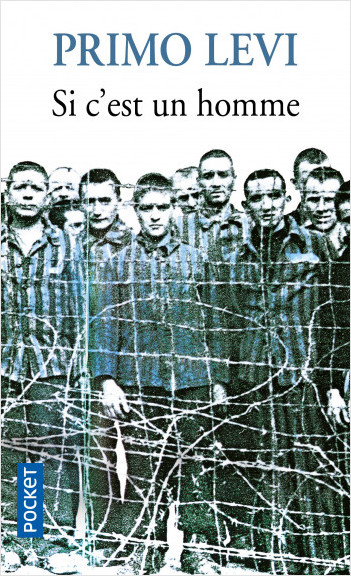

Blog de lecture
Lire c'est vivre dans un autre univers
"Quand on ose être soi-même, on se porte beaucoup mieux."
Bernard Siegel
-
3096 Jours
Natascha Kampusch
Natascha Kampusch a vécu le pire: le 2 mars 1998, à l'âge de dix ans, elle est enlevée sur le chemin de l'école. Pendant 3096 jours, huit ans et demi, son bourreau, Wolfgang Priklopil, la garde prisonnière dans une cave d'environ cinq mètres carrés, près de Vienne. Dans ce récit bouleversant, Natascha Kampusch révèle les circonstances de son enlèvement, le quotidien de sa captivité, sa terrible relation avec son ravisseur et la façon dont elle a réussi à survivre à cet enfer.
-
Le Journal d'Anne Frank
Anne Frank
Anne Frank est née le 12 juin 1929 à Francfort. À Amsterdam, elle connaît une enfance heureuse jusqu’en 1942, malgré la guerre. Le 6 juillet 1942, les Frank s’installent clandestinement dans «l’Annexe» de l’immeuble du 263, Prinsengracht. Le 4 août 1944, ils sont arrêtés sur dénonciation. Déportée à Auschwitz, puis à Bergen-Belsen, Anne meurt du typhus en février ou mars 1945, peu après sa sœur Margot. La jeune fille a tenu son journal du 12 juin 1942 au 1er août 1944, et son témoignage, connu dans le monde entier, reste l’un des plus émouvants sur la vie quotidienne d’une famille juive sous le joug nazi.
-

La Boîte à Merveilles
Ahmed Sefrioui
Ahmed Sefrioui, ou Sidi Mohammed, fait un bilan de son enfance à l’ancienne Médina de Fès, relatant ses journées au Msid (école coranique), le souvenir du bain Maure, la préparation pour Achoura (fête religieuse), et son attachement à sa boîte à merveilles. Le récit du roman est un véritable témoignage du vécu de l’entourage de Sidi Mohammed, enfant de six ans au caractère timide et rêveur, sa famille, les voisins, leurs habitudes et leurs problèmes.
-

Marie Antoinette
Stefan Zweig
De son arrivée en France, jeune adolescente autrichienne admirée par le peuple, à sa fin sur l'échafaud en reine détestée, Stefan Zweig s'attache à réhabiliter Marie-Antoinette sans taire ses erreurs.Il relate ainsi, en détail, sa trop grande distance avec le roi, ses dépenses faramineuses, son amour passionné pour le comte Axel de Fersen ou l'affaire du Collier.
-

Le Livre de ma mère
Albert Cohen
Le Livre De Ma Mère est une oeuvre autobiographique, dans lequel Albert Cohen raconte des brides de sa vie. Il nous exprime son désarroi face à la mort de sa mère, sa tristesse, son malheur. Dans ses souvenirs, il nous rappelle avec une extrême précision, les souvenirs de sa mère, ses attidudes, ses gestes, ses mots, son réconfort. Il raconte sa mère avec passion. Il nous fait partager ses moments d'angoisse face à une mort inévitable, indéniable et proche.
-

Si c'est un homme
Primo Levi
Si c’est un homme est le témoignage, le récit d’une année passée dans le camp de concentration d’Auschwitz par Primo Levi. Il raconte la déportation à Auschwitz depuis son arrestation le 13 Décembre 1943 à la libération du camp par l’Armée Rouge en Janvier 1945. La narration suit minutieusement les étapes du voyage et la découverte de l’enfer imcompréhensible que constitue le camp. Primo Levi en expose la structure complexe, rappelant les mauvais traitements, le froid, la faim, la maladie et le travail hasardant. Toutefois Levi entend montrer les possibilités de résistance non tant physique que morale de l’être humain.